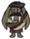

Delays freezing during Winter
| Tam o' Shanter | |
| |
|
| +6.7/min | |
| Durability | 25 days |
| Perk | Restores sanity over time Delays freezing during Winter |
| Dropped by | 25% |
| Stacks up to | Does not stack |
| DebugSpawn | "walrushat" |
| “ | SMELLS LIKE MAMMAL | ” |
| –WX-78 | ||
The Tam o' Shanter is a wearable item in-game. This item cannot be crafted and may only be obtained by killing MacTusk. A Sewing Kit repairs 20% of its durability.
It restores 6.7 Sanity per minute while worn, making it the most civilized of all hats, and as such, the best for restoring sanity. It is enough to cancel out the sanity drop of heavy rain or the night, even when playing as Wolfgang.
It is a tier 2 warm clothing, increasing the time a character can be without a fire during the Winter before freezing. It has an insulation factor of 120.
| Items dropped by Mobs | |
| Loot | Ash • Azure Feather • Batilisk Wing • Beard Hair • Beefalo Horn • Blow Dart • Blue Gem • Bunny Puff • Butter • Butterfly Wings • Charcoal • Crimson Feather • Deerclops Eyeball • Drumstick • Fleshy Bulb • Flint • Frog Legs • Gears • Guardian's Horn • Glow Berry • Honey • Hound's Tooth • Jet Feather • Krampus Sack • Light Bulb • Living Log • Mandrake • Meat • Monster Meat • Morsel • Mosquito Sack • Nightmare Fuel • Ornate Chest • Pig Skin • Purple Gem • Red Gem • Rocks • Silk • Slurtle Slime • Slurper Pelt • Spider Eggs • Spider Gland • Shelmet • Snurtle Shell Armor • Spiderhat • Stinger • Tam o' Shanter • Tentacle Spike • Tentacle Spots • Thulecite Fragments • Walrus Tusk |
| Indirect | Bee • Beefalo Wool • Butterfly • Crow • Fireflies • Gold Nugget • Guano • Manure • Redbird • Seeds • Snowbird • Rabbit • Mosquito |

{kind=link}